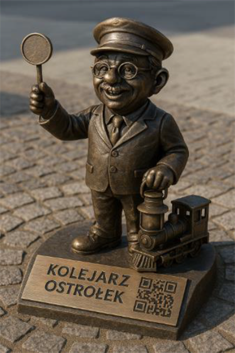

Poznaj Figurki

Kolejarz
Figurka w tradycyjnym mundurze z latarnią, symbolizująca bogatą historię kolejową miasta. Znajdziesz go na stacji PKP w Ostrołęce.

Major Bemcio
Miniaturowy żołnierz z okresu Powstania Listopadowego, z szablą i w historycznym mundurze. Można go znaleźć na Placu Bema.

Rybak Narwinek
Urocza figurka z siecią i wędką, która przypomina o znaczeniu rzeki Narew dla historii miasta. Szukaj go w pobliżu mostu Madalińskiego.